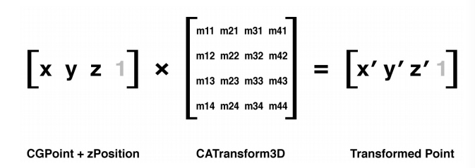

变换
变换
仿射变换
UIView的transform属性是一个CGAffineTransform类型，用于二维空间的旋转，缩放和平移.
CGAffineTransform是一个可以和二维空间向量（例如 CGPoint ）做乘法的3X2的矩阵；

上图中的灰色数值只是为了保证左边列数与右边行数相同可以做矩阵运算，其计算结果不保留也没有任何意义
CGAffineTransform
CGAffineTransformMakeRotation(CGFloat angle)
CGAffineTransformMakeScale(CGFloat sx, CGFloat sy)
CGAffineTransformMakeTranslation(CGFloat tx, CGFloat ty)
/**
旋转和缩放变换都可以很好解释--分别旋转或者缩放一个向量的值。平移变换是指
每个点都移动了向量指定的x或者y值--所以如果向量代表了一个点，那它就平移了
这个点的距离。
*/
注意
UIView可以通过设置tranform属性变换,它只是封装了内部的图层变换
CALayer也有transfrom属性，它的类型是CATransfrom3D并不是CGAffiTransfrom
CALayer对应UIView的transform属性的是affineTransform
CGAffiTransfrom一看名字就是基于Core Graphics的
#define RADIANS_TO_DEGREES(x) ((x)/M_PI*180.0)
//一个pi代表180°
CGAffineTransform transform = CGAffineTransformMakeRotation(M_PI_4);
self.layerView.layer.affineTransform = transform;
混合变换
Core Graphics提供了可在一个一个变换基础上做其他变化的函数
CGAffineTransformRotate(CGAffineTransform t, CGFloat angle)
CGAffineTransformScale(CGAffineTransform t, CGFloat sx, CGFloat sy)
CGAffineTransformTranslate(CGAffineTransform t, CGFloat tx, CGFloat ty)
还有一个例外的：
CGAffineTransformIdentity这是一个什么都不做的变换, CGAffineTransform 类型的空值,即单位矩阵。
//要混合两个已经存在的变换矩阵，做一个新的变换
CGAffineTransformConcat(CGAffineTransform t1, CGAffineTransform t2);
注意
当我们按顺序进行一些列变换的时候，变换的顺序是会影响结果的，比如旋转之后的平移和平移之后的旋
转结果可能不同。
3D变换
CGAffineTransform 类型属于Core Graphics框架.因为Core Graphics是一套2D绘图的API，因此仅仅对2D变换有效.
CALayer的transform属性(CATransform3D类型),可以让图层进行3D移动或者旋转
和CGAffiTranform类似,CATransform3D也是一个矩阵（在3维空间做变换的4*4矩阵）

Core Animation框架也有为我们提供一系列方法来创建和组合CATransform3D类型的矩阵，与CGAffiTransform不同的是其平移和缩放多了参数z 旋转 多了x.y.z
CATransform3DMakeRotation(CGFloat angle, CGFloat x, CGFloat y, CGFloat z)
CATransform3DMakeScale(CGFloat sx, CGFloat sy, CGFloat sz)
CATransform3DMakeTranslation(Gloat tx, CGFloat ty, CGFloat tz)
举个栗子:
//绕Y轴旋转45度
CATransform3D transform = CATransform3DMakeRotation(M_PI_4, 0, 1, 0);
self.layerView.layer.transform = transform;

这样的效果看起来并没有旋转而只是水平方向的压缩,这是因为我们用斜的视角看它，并不是透视
透视投影
我们在上面做的变换是等距投影：远处的物体和近处的物体保持同样的缩放比例
正常情况是物体远离我们由于视角原因会变小才对 我们需要引入投影变换（z变换）来对矩阵做一些修改，Core Animation并没有提供透视变换函数，我们需要手动改动矩阵(easy):

**m34 默认为0，我们可以设置其为-1/d来应用透视效果(d为视角和屏幕距离,估算测试一下就ok了,大概500-1000,值越小透视效果越明显但是太小会失真，太大又几乎失去透视效果) **
举个栗子:
CATransform3D transform = CATransform3DIdentity;
//apply perspective 我曹 真的直接m34就行了
transform.m34 = - 1.0 / 500.0;
//rotate by 45 degrees along the Y axis
transform = CATransform3DRotate(transform, M_PI_4, 0, 1, 0);
//apply to layer
self.layerView.layer.transform = transform;
灭点
在透视绘图时我们说当远离视角的物体会变小,当远到一个极限的时候就会变陈一个点,最终所有物体都会汇聚消失在这同一个点. 即灭点
在现实中，这个点通常是视图的中心,或者至少是包含所有3D对象的视图中心
Core Animation定义了这个点位于变换图层的anchorPoint（通常位于图层中心，但也有例外）
这就是说，当图层发生变换时，这个点永远位于图层变换之前anchorPoint的位置。

注意
当改变一个图层的position，你也改变了它的灭点，做3D变换的时候要时刻记住这一点，当你视图通过调整 m34 来让它更加有3D效果，应该首先把它放置于屏幕中央，然后通过平移来把它移动到指定位置（而不是直接改变它的position）灭点会处于变化之前的位置,这样的话就能保证所有的3D图层都共享一个灭点。